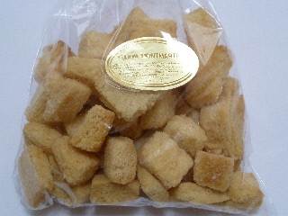
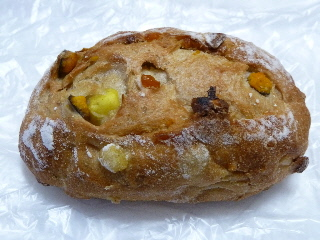
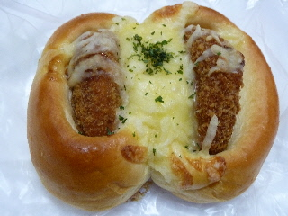
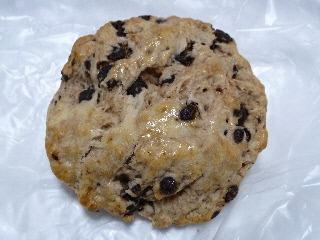
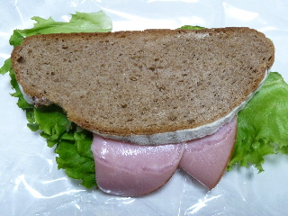

モンマルトのパンがなくなってました。
2012/09/05
今日スーパーに買い物の行ったら、モンマルトさんのパンがなくなっていました。
破産されたのは知っていたんですが、
実際にお店の棚からなくなっているのを見ると寂しいですね。
再生しないかな？してほしいな。
出雲市のパン屋さんて、○○系列のお店が多いんですよね。
なので、モンマルトさんは貴重なパン屋さんでした。
イオン出雲店内にもあります。
2012/09/05
今日スーパーに買い物の行ったら、モンマルトさんのパンがなくなっていました。
破産されたのは知っていたんですが、
実際にお店の棚からなくなっているのを見ると寂しいですね。
再生しないかな？してほしいな。
出雲市のパン屋さんて、○○系列のお店が多いんですよね。
なので、モンマルトさんは貴重なパン屋さんでした。
2012/05/29
モンマルトのキューブラスク（147円）です。

小さいラスクが沢山入っています。
つまんで食べやすいですね。
食パンで出来ているので、サクサクっと軽かったです。
味がしっかりしみ込んでて、甘くていいお菓子でした。
2011/12/18
4種の具が入ったパンです。210円とちょっと高価ですね。

見た目ちょっと固そうですが、ふっくらとしていました。
カボチャやサツマイモが入ってて、ホクホク感と甘さがあるパンでした。
自然な甘さがパンとあっていて、美味しかったです。
2011/12/18
ちょっと変わった見た目のコロッケパンです。
178円です。

真ん中でパカッと二つに割れて食べやすかったです。
コロッケパンなのでソース味を期待したんですが、やさしい味で上品な感じがしました。
ページトップへ
2011/07/21
見た目がワイルドなスコーンですね。

ちょっと硬そうに見えるので、クッキーっぽい感じかと思ったんですが、食べてみると普通にやわらかいスコーンでした。
チョコチップが沢山入っていたんですが、スコーンらしく、マイルドな甘さになっていました。
2011/07/21
ちょっとお洒落で豪華なサンドイッチです。

酸味があって味わい深いパンに、ハムが多目に入っていました。
ガッツリ食べるのはもったいないので、味わっていただきました。
おつまみにもいいかもしれませんね。
モンマルトのチョコ＆マシュマロベーグル
モンマルトのショコラシフォン
モンマルトのベイクドチーズ
モンマルトのアンドーナッツ
モンマルトのいちじくコロネ
モンマルトのマヨフラ
モンマルトのくるみボール
モンマルトのブルーベリーシフォン
モンマルトのオニマヨ
モンマルトの抹茶ドーム（この店舗は今はありません）